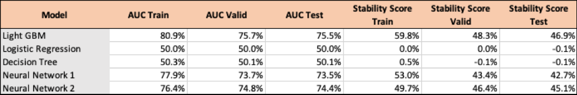

Kaggle competition hosted a consumer credit provider who focuses on responsible lending to people with little or no credit history. The aim of the competition was to create a credit risk scoring model which remains effective and stable over time. Data Science could help better predict loan repayment capabilities such that consumer lending can become more inclusive and acessible. If there are less unknowns, then lenders can reduce conservative naive approaches.
In this exercise, I explore traditional Machine Learning approaches and Deep Learning approaches. Deep Learning can provide new opportunities for credit modeling and has not been extensively applied in the real world much as of current. Some reasons being that they are newer methods and are considered "Black Box" models and lack explainability and transparency. However, proving the credibility of these models can pave the road for more adoption in the industry in the future when explainability methods improve.
View on GitHubData Preparation
A significant volume of data was provided for this analysis in many different tables from different sources. We leveraged the blazing-fast Polars Python library for initial cleaning and joining of the different tables to create one DataFrame.
Feature Engineering
This included converting string fields to categorical data types, aggregating nested data, dealing with Null values, and encoding for use in machine learning models.
Models
Logistic Regression: A popular algorithm for credit scoring problems which offers simplicity and transparency. Implemented with Sci-Kit Learn.
Decision Tree: Another popular machine learning algorithm for this application. Implemented with Sci-Kit Learn.
Light Gradient Boosting Machine: A tree-based algorithm which is much more efficient and usually more accurate than the above. Implemented with Sci-Kit Learn.
Neural Networks: Two network architectures were explored. First, a simple Multi-Layer Perceptron with 1 hidden layer and 64 nodes implemented in Keras with a backend of TensorFlow. Second, a deeper network with 3 hidden dense layers, dropout layers, and Self-Attention and ran for 30 epochs instead of 10. Also added to the second model was class weighting to deal with target class imbalance ubiquitously experienced in loan default problems.

Takeaways
The Light Gradient Boosting Machine which is industry standard performed the best, with Neural Networks just behind. The much more complicated neural network performed marginally better than the simplified version. It is difficult to further improve upon the work already done in this area for many years, so any small improvements is considered a large feat.
The industry should be more welcoming to using neural networks in their loan decision making as they appear to very accurate and able to account for many correlated features in the data.
If you'd like to get in touch, feel free to reach out to me at: